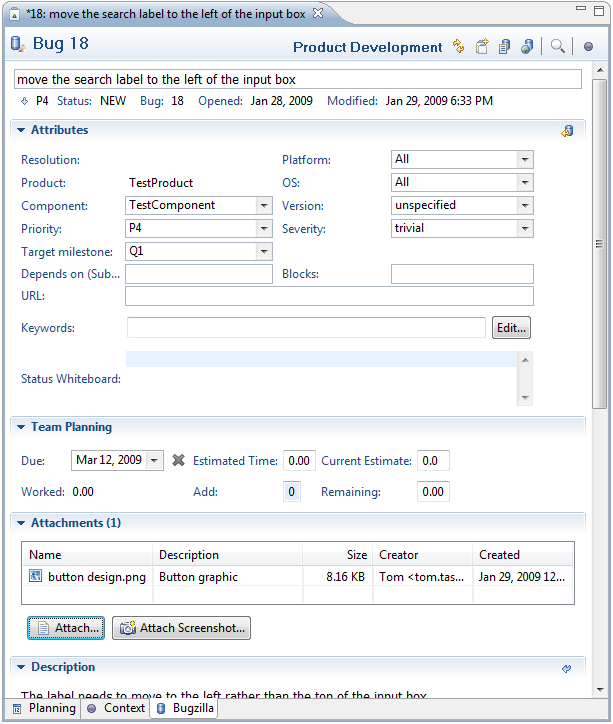
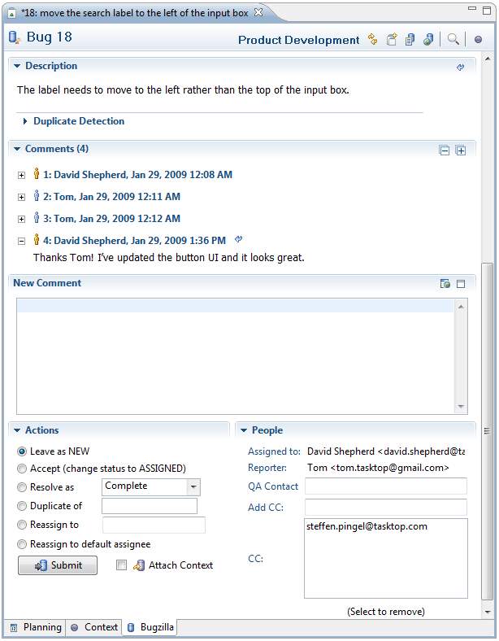
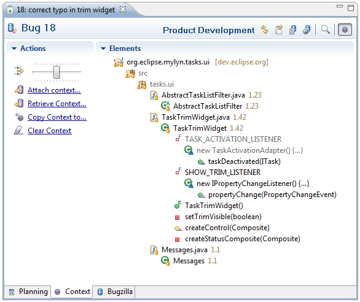

| Task Editor | ||
|---|---|---|
|
|
|
|
| Task Repositories | Task-Focused Interface | |
The task editor allows you to view and edit the tasks in your task list. Double-click on a task in your task list to open the editor. The features of the task editor will vary depending on whether it is a local task or a shared repository task. For shared repository tasks, there are some differences depending on the type of repository (and corresponding connector) that you are using (link: connectors).
In this section, we describe the task editor for shared bugs in a Bugzilla repository. Task editors for other repository types such as JIRA offer similar functionality.

Editor toolbar buttons
Attributes Use the Attributes section to add or update structured information about the task.
Team Planning The Team Planning section contains time-related information about the task that will be shared with your team. You can use the Due field to set a due date for your task. On the due date, the task will appear in red in your task list.
Attachments You can attach a file to this task so that a copy will be uploaded to your task repository and become available to anyone who can access the task.
To attach a file
Duplicate Detection When submitting bug reports, you can avoid duplicates by clicking the "Search" button. This will search the repository for a stack trace that matches a stack trace in the task's Description field. The results of the duplicate detection show up in the Search view. If a match is found, you can open it and comment instead of creating a new bug report.
Comments Use this section to add new comments about the task and view all previous comments. Comments you have read previously are folded. You can expand and re-read individual comments or click the "+" at the top right to expand all comments.

Actions Use this section to change the task's status or reassign the task to another person.
People This section shows the people who are collaborating on the task.
The context tab allows you to manage the context of resources associated with the task. You can view the context tab by selecting it in the lower left of the editor window.
Elements
This section lists the resources that are part of the task's context. Because the number of elements may be large, you can adjust the level of detail using the slider at the top of the
Actions section. Sliding the control all the way to the left will show you all elements in your task context. As you slide to the right, only the elements with a high level of interest will be displayed. You can manually remove elements from your task context by right-clicking and selecting "Remove From Context". You may choose to view all elements and prune irrelevant items in this way before attaching the context to the task so that others can download it.
Actions

Use the planning tab to access local information about the task that is private to your workspace. You can view the planning tab by selecting it in the lower left of the editor window. This tab contains a large area where you can enter personal notes about the task. See the local task section for more information about fields in the Personal Planning section.

|
|

|
|
| Task Repositories | Task-Focused Interface |